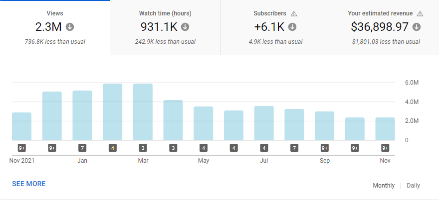
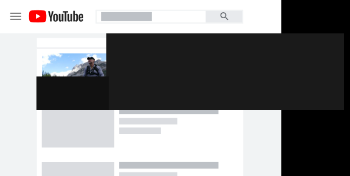
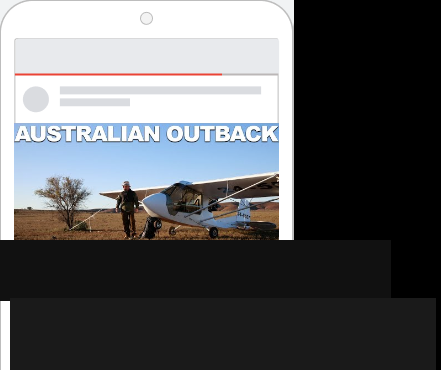

A long-running survival documentary series on YouTube, with a catalog spanning multiple seasons and geographic locations. The channel had built a substantial organic audience over more than a decade.
Growing a subscriber base through paid YouTube requires a decision about structure. One broad campaign targeting outdoor or survival interests treats all of the channel's content the same. Geographic ad groups (Norway, Australian Outback, Grenada Island) and show-title groups (Bigfoot Chronicles and others) attract different viewers with different reasons to subscribe. A single undifferentiated campaign cannot tell you which content is actually doing the work.
Discovery campaigns were organized into 18 ad groups across two structural axes: geography (the primary axis) and show title (supplementary). Skippable and Sequencing formats ran as separate campaigns with separate budgets. November 2022 produced 560 earned subscribers and 127,665 views from $4,809.86 in managed spend. Average cost per view: $0.04. Average cost per subscriber: $8.59.
The channel had accumulated substantial organic watch history across more than a decade before any paid activity. November 2022 sits at the right edge of the full-year view below.

YouTube Studio · Nov 2021–Nov 2022 monthly view overview. Channel identity withheld per NDA. The November 2022 column is the month the paid campaign ran.
Rather than grouping all content under a single campaign, Discovery was structured with geography as the primary axis. Norway, India, Australian Outback, and Grenada Island each ran as distinct geographic ad groups, with additional groups organized by show title. Norway, a geographic group targeting a specific expedition location, produced 363 of the 560 total subscribers on 43% of total impressions, at the lowest cost per subscriber in the account.
| Show Title | Impressions | Earned Subscribers | Share of Total Subs |
|---|---|---|---|
|
Norway
Top performer · highest sub rate
|
2,430,000 | 363 | 64.8% |
|
Bigfoot Chronicles
Second by volume
|
1,190,000 | 117 | 20.9% |
|
Remaining 16 titles
Australian Outback, India, and others
|
2,040,000 | 80 | 14.3% |
| All Discovery Ad Groups · November 2022 | 5,660,000 | 560 subscribers | 127,665 total views |
Data sourced from YouTube Ads Manager, November 2022. Earned subscribers are attributed to paid campaigns. Impression totals include Discovery, Skippable, and Sequencing formats. Per-group view counts not reported separately in the source document.
Geographic targeting was the most meaningful variable in subscriber conversion
Norway, a geographic ad group targeting a specific expedition location, produced 363 subscribers from 2.43M impressions. The remaining 16 ad groups combined produced 80 subscribers from a similar total impression count, at the same channel, spend rate, and format. Norway converts viewers into subscribers at a rate the other groups cannot match. That gap cannot be identified without separating ad groups by their actual targeting axis.
Discovery and Skippable serve different viewer states
Discovery reaches someone on the YouTube home feed or in search results who has not committed to watching anything. Skippable reaches someone mid-session with a video already loaded. Mixing the two in one campaign structure collapses two different moments of intent into a single budget, which makes creative performance data unreliable and bidding signals harder to read.
The subscriber base is geographically concentrated in two markets
56.8% of views came from the United States. Canada added 30.2%. Together they account for 87% of the channel's paid viewership. Australia and the UK contributed 13.2% combined. Budget distributed evenly across all English-speaking markets spreads spend across markets that generate views but produce fewer subscribers relative to the US and Canada.
Afternoon and evening engagement is consistent enough to weight
Peak viewing hours ran from 3PM to 6PM across the documented period. The pattern was consistent enough to inform bid adjustments. The shift is marginal compared to structure and creative decisions, but at sustained monthly spend it compounds across a full year.
The same structural logic applies here as in any campaign account. Segment by the variable that actually predicts performance. Don't let budget flow undifferentiated across segments that behave differently.
See how that applies to your account →The structural problems in a YouTube subscriber campaign look different from a Shopping account. The diagnostic finds them either way.
Device, geographic, and gender distributions from the November 2022 campaign data. These inform bid weighting, creative format decisions, and geographic targeting in subsequent months.
Mobile-first distribution is consistent with YouTube's overall viewership patterns. Skippable creative was cut for vertical and horizontal formats accordingly.
US and Canada together represent 87% of paid viewership. Budget concentration in those two markets produces the most subscriber volume per dollar.
Peak engagement: 3PM to 6PM, consistent across the documented period. Afternoon hours produced the highest view and subscriber volume relative to spend.
Each major series in the channel catalog was separated into its own Discovery ad group with creative matched to that content. Norway thumbnails ran in the Norway group. Bigfoot Chronicles creative ran in the Bigfoot group. The structure meant that performance data was readable at the show level, not averaged across the entire catalog.
Discovery targeted viewers on the home feed and in search results before they committed to watching. Skippable ran for viewers already in session, serving as a mid-watch touchpoint. Sequencing re-engaged viewers who had watched shorter content with longer-form episodes from the same show. Each format had separate budgets and separate creative requirements.
With 87% of paid viewership concentrated in two markets, targeting was structured to reflect that concentration rather than distributing budget equally across all English-speaking regions. Australia and the UK remained in the targeting set as secondary markets, not primary.
Norway produced 363 subscribers. The remaining 16 ad groups combined produced 80. Budget followed the subscriber data, not the impression share. Shows that generated views without proportionate subscriber conversions received less budget in subsequent weeks. The account optimized toward what the channel actually needed, not toward reach.
Eighteen ad groups across three campaign formats and four geographic markets. The structure existed to answer one question each month: which content converts a viewer into a subscriber, and at what cost. Everything else was secondary to that signal.
Complete November 2022 account totals across all formats and ad groups.
| Metric | Result | Notes |
|---|---|---|
| Earned Subscribers | 560 | Platform-attributed to paid campaigns, all formats |
| Cost Per Subscriber | $8.59 | Total managed spend / earned subscribers |
| Total Impressions | 5,660,000 | Discovery, Skippable, and Sequencing combined |
| Video Views | 127,665 | Clicks to view (Discovery) and earned views (Skippable) |
| Average CPV | $0.04 | Total spend / total views |
| Top Ad Group | Norway | 363 subscribers on 2.43M impressions (64.8% of total subs) |
| Managed Spend | $4,809.86 | Across all Discovery, Skippable, and Sequencing campaigns |
| Documented Period | November 2022 | Single calendar month |
Norway's performance is the defining data point in this account. 363 of 560 total subscribers came from a single show, on 43% of total impressions. Budget shifted toward Norway and away from lower-converting titles as the month progressed.
Bigfoot Chronicles ranked second with 117 subscribers. The remaining 16 ad groups contributed 80 combined. That distribution is the account telling you where to invest. The structural job is to make sure the budget can actually follow the signal.
All data sourced from YouTube Ads Manager, November 2022. Earned subscribers are platform-attributed to paid campaigns. This case study represents a single documented month.
YouTube Discovery ads appear in search results, on the homepage, and in the watch-next panel. Creative was matched to the geographic or show-title ad group it belonged to. Channel identity and ad copy redacted per NDA.


Screenshots from the November 2022 campaign period. Channel name, ad copy, and identifying elements redacted per NDA.
You leave with a prioritized plan for your account, yours to keep whether you work with us or not.